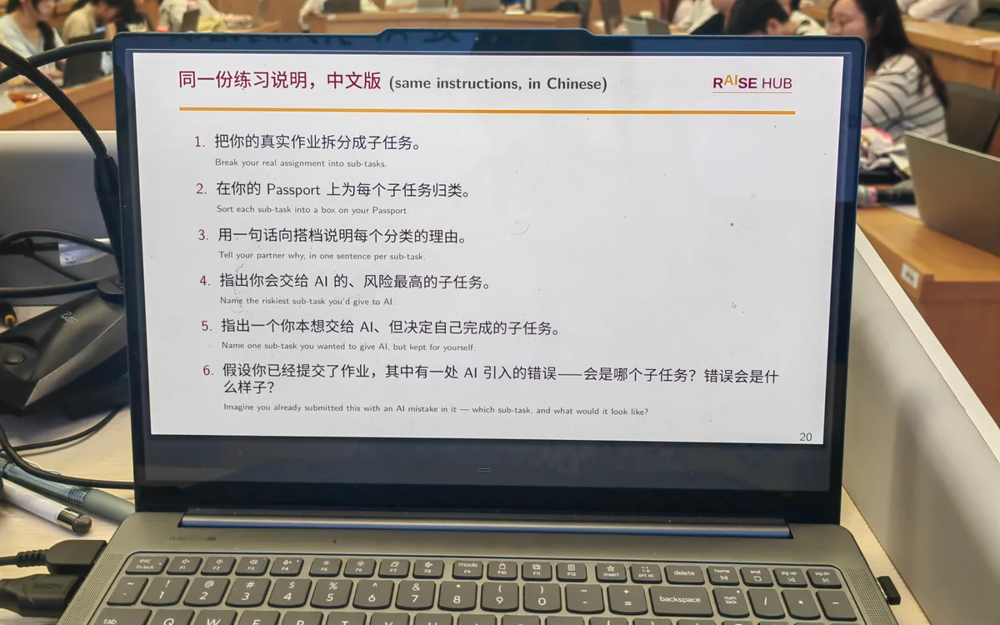

海南大学—亚利桑那州立大学联合国际旅游学院
中外合作办学本科项目，接受旅游与酒店管理领域的中英文课程训练。
- 海南大学学籍专业
- 酒店管理（中外合作办学）
- ASU 专业方向
- Tourism Development and Management (TDM)
关于我
你好，我是曾子翔，就读于海南大学—亚利桑那州立大学联合国际旅游学院。海南大学学籍专业为酒店管理（中外合作办学），ASU 专业方向为 Tourism Development and Management（TDM）。
我关注旅游如何影响地方文化与社区生活，也在骑楼英文讲解、课程 Mentor 和校园项目中练习把资料转化为清晰、面向真实受众的表达。
RAISE Hub 与公共机构实践让我进一步重视资料来源、数据核对、规范写作和团队协作。我希望持续积累扎实的研究与项目经验，并用更严谨的方式理解旅游现象。
关注议题
近期动态
课程实践
协助教师开展理论课程与周末户外行动，支持低年级学生的领导力实践、活动规划与现场执行。
荣誉
以持续的课程学习、校园参与和综合表现获得两项校级与书院荣誉。
资料支持
参与资料收集、分类归档、关键信息提取、研究笔记与工作坊数字材料整理，并完成人工核验。
团队项目
与团队共同提交三年男性湿巾市场进入方案 PPT 及 Excel 财务模型。
教育背景
中外合作办学本科项目，接受旅游与酒店管理领域的中英文课程训练。
荣誉
岗位要求与个人证据
专业排名 7/104（前约 7%）；课程优秀率 64.36%；三好学生与综合二等奖学金。
按计划完成阅读、课程背景梳理和研究基础训练。
CET-4 586、CET-6 469；骑楼老街英语讲解；双语学习环境。
英文文献初筛、术语核对、摘要整理与跨文化表达。
南京市溧水区疾控中心资料实践；GATSBY 商赛中参与财务模型和团队交付。
数据录入、表格复核、字段一致性检查和基础整理。
参与 RAISE Hub 资料分类归档、关键信息提取、研究笔记整理和人工核验。
研究笔记、材料命名、来源记录、版本管理和格式统一。
U-First Mentor、骑楼志愿讲解、RAISE Hub 与学生组织协作。
会议与活动支持、任务跟进、活动协调和团队沟通。
科研支持与资料处理
参与项目资料收集、分类归档、关键信息提取与研究笔记整理；使用 AI 工具辅助 Workshop 网页内容和数字文件整理，并对生成内容进行人工核验。
完成业务数据录入、核对与整理，协助整理企业健康教育材料，并撰写 2 份月度工作总结；在公共机构流程中训练准确记录、规范写作与保密意识。
项目文化与课程实践

面向国际游客提供英语讲解与参观引导。需要先理解本地建筑、街区与文化背景，再根据现场提问调整表达，让文化信息既准确又容易理解。
能力迁移：文化资料梳理、面向受众的解释、英文沟通与现场观察。

协助教师完成平日理论课和周末户外行动课程，作为年长学生助手支持低年级学生开展领导力实践，并协助活动方案、任务分工与现场执行。
能力迁移：课程协作、活动规划、任务跟进、现场记录与团队支持。
Three-Year Indonesia
Market Entry StrategyTeam Deliverables: PPT + Excel Financial Model参与制定三年印尼男性湿巾市场进入方案，参与搭建财务模型，团队共同提交 PPT 与 Excel。该经历训练了信息筛选、假设记录、表格协作和团队交付，所有成果均为团队共同完成。
能力迁移：资料搜集、模型字段核对、团队版本协同与结论表达。
校园服务与组织参与
参与学生支持、信息沟通与活动协助，在面向师生的任务中保持及时回应和清晰记录。
参与活动筹备、内容传播和现场执行，服务约 2,000 名参与者，相关参与度提升约 30%。
作为负责人之一参与社团延续与首场活动组织，承担流程、主持、现场协调，以及与同伴合作的宣传工作。
参与图书上架与空间整理志愿服务，按分类和位置要求完成书籍整理。
完成急救知识与实操训练，建立在现场情境中按步骤判断、协作和响应的意识。
新加入，关注乡村儿童与社区发展。
影像记录


申请目标